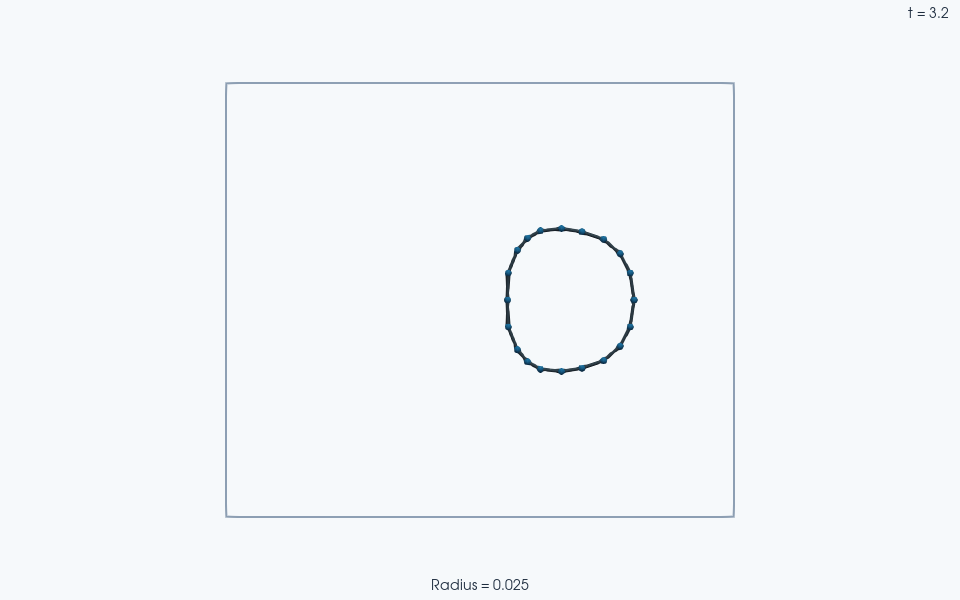

Note
Go to the end to download the full example code.
Deformable Particles#
DeformableParticleModel
turns a mesh of point particles (vertices) into elastic, deformable bodies
whose nodal forces follow \(\mathbf{F}_i = -\partial E / \partial \mathbf{x}_i\).
With element measure \(\mathcal{M}_m\) (segment length in 2D, triangle area
in 3D), enclosed body content \(\mathcal{C}_I\) (area in 2D, volume in 3D),
edge length \(L_e\), signed bend \(\theta_a\), and subscript 0 for
reference geometry:
Note that a positive surface tension \(\gamma\) pulls the perimeter/surface inward even at the reference shape. For step-by-step packing and compression of deformable bodies, see Geometric-asperity deformable particles: step-by-step pipeline.
import jax
import jax.numpy as jnp
import jaxdem as jdem
from jaxdem.bonded_forces import DeformableParticleModel
Creating and Attaching a Deformable Particle#
Build a model with BondedForceModel.create.
Reference quantities (initial_element_measures, initial_body_contents,
initial_edge_lengths, initial_bendings) are derived automatically
from vertices when omitted. Closed content elasticity requires consistent
winding (CCW segments in 2D, outward-facing triangles in 3D).
Passing bonded_force_model=dp (or bonded_force_model_type/_kw) to
create() automatically wires its forces and
energies into ForceManager:
vertices_2d = jnp.array([[0.0, 0.0], [1.0, 0.0], [1.0, 1.0], [0.0, 1.0]], dtype=float)
elements_2d = jnp.array([[0, 1], [1, 2], [2, 3], [3, 0]], dtype=int)
adjacency_2d = jnp.array([[0, 1], [1, 2], [2, 3], [3, 0]], dtype=int)
dp = jdem.BondedForceModel.create(
"deformable_particle_model",
vertices=vertices_2d,
elements=elements_2d,
edges=elements_2d,
element_adjacency=adjacency_2d,
em=1.0,
eb=0.5,
el=0.3,
gamma=0.1,
)
state = jdem.State.create(pos=vertices_2d, rad=jnp.full(4, 0.1))
system = jdem.System.create(state.shape, bonded_force_model=dp)
print("Attached model:", type(system.bonded_force_model).__name__, "| em shape:", dp.em.shape)
Attached model: DeformableParticleModel | em shape: (4,)
Coefficients, Lazy Allocation, and Independent Edges#
Every coefficient accepts a scalar (broadcast automatically) or an array:
Coefficient |
Shape |
Meaning |
|---|---|---|
|
Measure stiffness (segment length / triangle area) |
|
|
Line / surface tension |
|
|
Bending stiffness |
|
|
Edge-spring stiffness |
|
|
Content stiffness (enclosed area / volume; uses |
Arrays for omitted (None) coefficients are never allocated. Moreover,
edges are completely independent of elements — you can add diagonal
cross-braces or tethers without defining mesh elements at all:
dp_struts = jdem.BondedForceModel.create(
"deformable_particle_model",
vertices=vertices_2d,
edges=jnp.array([[0, 2], [1, 3]]),
el=0.5,
)
print("Strut edges:", dp_struts.edges, "| elements stored?", dp_struts.elements is not None)
Strut edges: [[0 2]
[1 3]] | elements stored? False
2D vs 3D Meshes#
Dimension is inferred from vertices.shape[-1]:
Concept |
2D |
3D |
|---|---|---|
Elements |
Segments |
Triangles |
Measure / Content |
Segment length / Enclosed area |
Triangle area / Enclosed volume |
Bending hinge |
Shared vertex |
Shared edge ( |
vertices_3d = jnp.array(
[[0.0, 0.0, 0.0], [1.0, 0.0, 0.0], [0.5, 1.0, 0.0], [0.5, 0.5, 1.0]], dtype=float
)
elements_3d = jnp.array([[0, 2, 1], [0, 1, 3], [1, 2, 3], [0, 3, 2]], dtype=int)
adjacency_3d = jnp.array([[0, 1], [0, 2], [0, 3], [1, 2], [1, 3], [2, 3]], dtype=int)
dp_3d = jdem.BondedForceModel.create(
"deformable_particle_model",
vertices=vertices_3d,
elements=elements_3d,
element_adjacency=adjacency_3d,
em=1.0,
eb=0.5,
)
print("3D elements:", dp_3d.elements.shape, "| inferred hinge edges:", dp_3d.element_adjacency_edges.shape)
3D elements: (4, 3) | inferred hinge edges: (6, 2)
Multiple Bodies, bond_id, and Adding/Merging#
When one model holds multiple bodies, elements_id maps each element to
its body index (0 .. K-1) for per-body ec. Remember that a bonded
model does not automatically disable contact forces between bonded
vertices — set state.bond_id to mask
adjacent-node contacts.
Use add()
and merge()
to combine bodies (padding missing energy terms with 0 stiffness):
Important
Keep ``State.merge`` and ``DeformableParticleModel.merge`` in lockstep!
DeformableParticleModel.merge shifts vertex indices assuming the two
corresponding State objects are merged in the
exact same order.
dp_a = jdem.BondedForceModel.create(
"deformable_particle_model",
vertices=vertices_2d,
elements=elements_2d,
em=1.0,
ec=0.5,
)
dp_b = jdem.BondedForceModel.create(
"deformable_particle_model",
vertices=vertices_2d + jnp.array([2.0, 0.0]),
elements=elements_2d,
edges=elements_2d,
el=0.5,
ec=0.8,
)
dp_merged = DeformableParticleModel.merge(dp_a, dp_b)
dp_extended = DeformableParticleModel.add(
dp_a,
vertices=vertices_2d + jnp.array([4.0, 0.0]),
elements=elements_2d,
em=2.0,
ec=0.6,
)
print("Merged elements_id:", dp_merged.elements_id, "| ec:", dp_merged.ec)
print("Extended elements shape:", dp_extended.elements.shape)
Merged elements_id: [0 0 0 0 1 1 1 1] | ec: [0.5 0.8]
Extended elements shape: (8, 2)
Batched Simulations with jax.vmap#
Each batched simulation carries its own deformable model and state:
def create_sim(i: jax.Array) -> tuple[jdem.State, jdem.System]:
stretch = 1.0 + 0.02 * (i + 1)
st = jdem.State.create(pos=vertices_2d * jnp.array([stretch, 1.0]), rad=jnp.full(4, 0.1))
model = jdem.BondedForceModel.create(
"deformable_particle_model",
vertices=vertices_2d,
elements=elements_2d,
edges=elements_2d,
element_adjacency=adjacency_2d,
em=1.0,
eb=0.5,
el=0.3,
gamma=None,
)
sys = jdem.System.create(st.shape, bonded_force_model=model)
return jdem.System.initialize(st, sys)
states, systems = jax.vmap(create_sim)(jnp.arange(3))
initial_widths = states.pos[:, 1, 0] - states.pos[:, 0, 0]
states, systems = jdem.System.step(states, systems, n=10)
print("Initial widths:", initial_widths)
print("After 10 steps:", states.pos[:, 1, 0] - states.pos[:, 0, 0])
Initial widths: [1.02 1.04 1.06]
After 10 steps: [1.01993503 1.03987007 1.0598051 ]
VTK Output#
VTKWriter automatically writes
deformable_elements, deformable_edges, and
deformable_edge_adjacencies collections for whichever energy terms are
active (with initial/current measures, lengths, and bending angles as cell
data).
Wall-Bounce Simulation#
Launch a 20-vertex closed elastic polygon into a reflective wall. Here wall
contact occurs at the spherical nodes; for continuous segment/triangle surface
contacts on deformable meshes, attach contact facets with
add_contact_facets() (see
Facets (Triangular & Line Boundaries)):
n_verts = 20
angles = jnp.linspace(0.0, 2.0 * jnp.pi, n_verts, endpoint=False)
wall_vertices = jnp.array([1.2, 1.5]) + 0.45 * jnp.stack(
(jnp.cos(angles), jnp.sin(angles)), axis=-1
)
idx = jnp.arange(n_verts)
nxt = (idx + 1) % n_verts
wall_elements = jnp.stack((idx, nxt), axis=-1)
wall_bonds = jnp.stack(((idx - 1) % n_verts, nxt), axis=-1)
wall_state = jdem.State.create(
pos=wall_vertices,
vel=jnp.tile(jnp.array([1.2, 0.0]), (n_verts, 1)),
rad=jnp.full(n_verts, 0.025),
mass=jnp.full(n_verts, 1.0 / n_verts),
bond_id=wall_bonds,
)
wall_model = jdem.BondedForceModel.create(
"deformable_particle_model",
vertices=wall_vertices,
elements=wall_elements,
edges=wall_elements,
element_adjacency=wall_elements,
em=1.5,
ec=3.0,
el=1.5,
eb=0.1,
gamma=None,
)
wall_system = jdem.System.create(
state=wall_state,
dt=0.002,
rotation_integrator_type=None,
collider_type="naive",
domain_type="reflectsphere",
domain_kw={"box_size": jnp.array([3.5, 3.0]), "restitution_coefficient": 1.0},
bonded_force_model=wall_model,
)
wall_state, wall_system = jdem.System.initialize(wall_state, wall_system)
wall_state, wall_system, (scene_states, scene_systems) = jdem.System.trajectory_rollout(
wall_state, wall_system, strides=jnp.asarray([0] + [40] * 40)
)
wall_system.check_overflow()
widths = scene_states.pos[:, :, 0].max(axis=1) - scene_states.pos[:, :, 0].min(axis=1)
com_vx = scene_states.vel[:, :, 0].mean(axis=1)
print(f"Width during impact: {float(widths[0]):.3f} -> {float(widths.min()):.3f}")
print(f"Peak rebound speed: {float(-com_vx.min()):.3f}")

ParaView rendering of this run’s VTKWriter output.
Width during impact: 0.900 -> 0.471
Peak rebound speed: 0.882
Total running time of the script: (0 minutes 17.009 seconds)